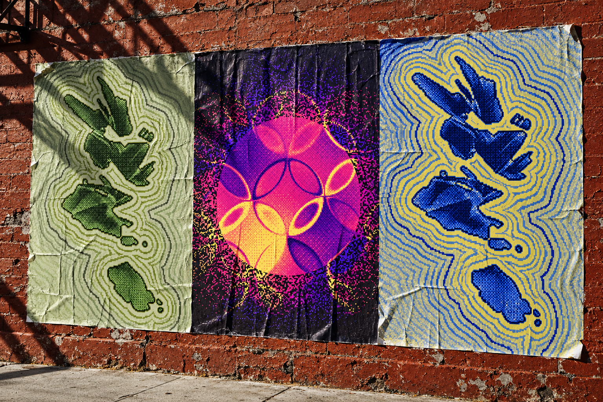
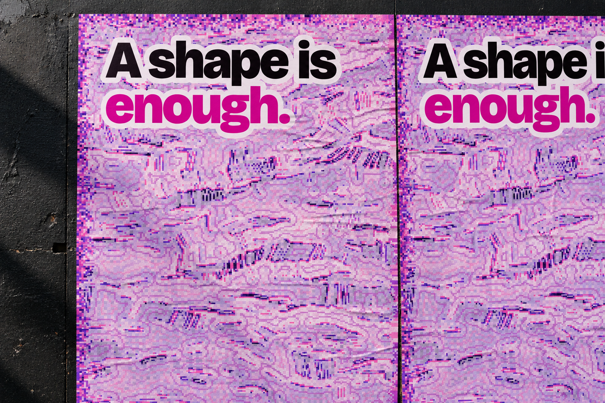
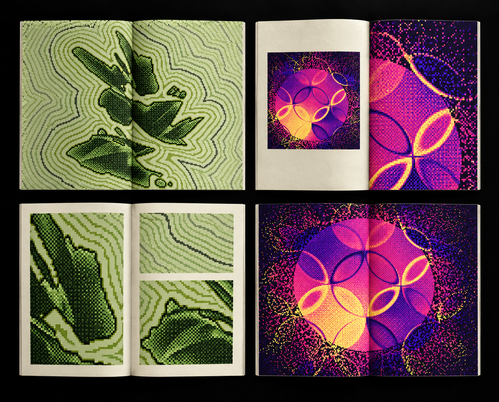
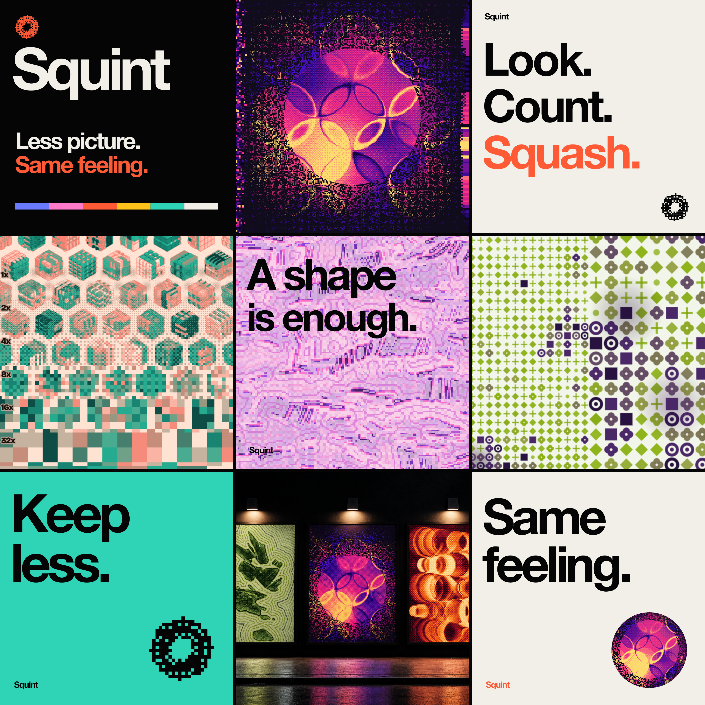
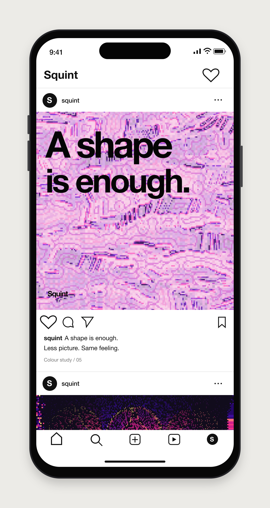

Squint
Less picture, same feeling. Squint takes any photograph, throws most of it away, and prints what is left as a poster.
- Year
- 2026
- Tools
- Canvas, Bricolage Grotesque, DM Mono
- Discipline
- Brand IdentityPoster DesignZineCreative Coding
- Context
- Self initiated
Question
How simple can a picture get? Make the squares bigger and it gets simpler. Swap a thousand colours for ten and it gets simpler again.
The tool
Built a tool that finds the point just before a picture stops being itself, then a brand, sixteen posters and a zine that look like it.
Posters




Zine

Reflection
At some point it stops being the picture, and just before that it is at its most interesting.
Social

